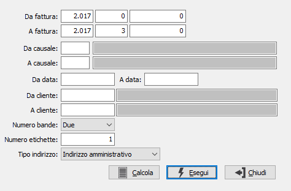

Stampa etichette fatture
Il programma consente di effettuare la stampa di etichette relative alle fatture di vendita su più bande.
La funzione “calcola” provvede a visualizzare il numero di etichette da stampare, corrispondente al numero di fatture di vendita in base ai parametri indicati. La funzione “Esegui” genera invece la stampa effettiva.

DA FATTURA: tre campi per contenere rispettivamente anno, serie sezionale e numero del documento da cui si vuole iniziare la selezione. Confermando a vuoto, la selezione inizia dal primo documento compatibile con i successivi parametri.
A FATTURA: tre campi per contenere rispettivamente anno, serie sezionale e numero del documento con cui si vuole concludere la selezione. Confermando a vuoto, la selezione termina con l’ultimo documento compatibile con i successivi parametri.
DA CAUSALE: codice della causale documento da cui si vuole iniziare la selezione. Confermando a vuoto, la selezione inizia dalla prima causale valida. Sul campo sono attive le funzioni di ricerca (F9).
A CAUSALE: codice della causale documento con cui si vuole iniziare la selezione. Confermando a vuoto, la selezione termina all’ultima causale valida. Sul campo sono attive le funzioni di ricerca (F9).
DA DATA: eventuale data del documento da cui deve iniziare l’analisi dei documenti relativamente ai precedenti parametri di selezione. Confermando a vuoto, l’analisi inizia con il primo documento valido.
A DATA: eventuale data del documento con cui si desidera terminare l’analisi dei documenti relativamente ai precedenti parametri di selezione. Confermando a vuoto, l’analisi si conclude con l'ultimo documento valido.
DA CLIENTE: eventuale codice del cliente, presente in anagrafica, da cui si vuole iniziare la selezione di analisi. Confermando a vuoto, la selezione inizia dal primo cliente valido. Sul campo sono attive le funzioni di ricerca (F9).
A CLIENTE: eventuale codice del cliente, presente in anagrafica, con cui si vuole terminare la selezione di analisi. Confermando a vuoto, la selezione termina con l'ultimo cliente valido. Sul campo sono attive le funzioni di ricerca (F9).
NUMERO BANDE: identifica il numero di colonne del modulo di stampa; valori possibili: uno, due, tre.
NUMERO ETICHETTE: indica il numero di etichette da stampare per ogni documento.
TIPO INDIRIZZO: consente di specificare l'indirizzo da inserire sulle etichette: indirizzo amministrativo oppure indirizzo di consegna.